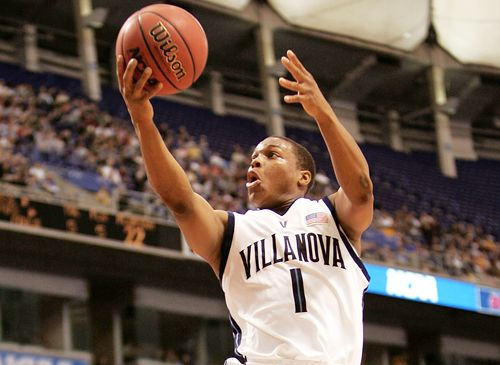
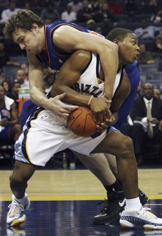
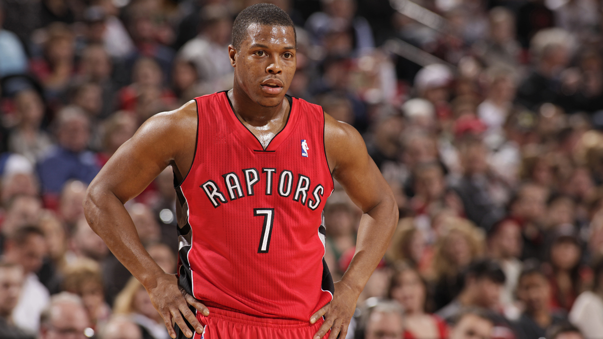

Before the NBA, Kyle Lowry [ like any other, high school basketball player ] aspired to play in the big leagues. He attended Cardinal Dougherty High School in Philadelphia [ where he was born and grew up in ]. He played there through grade 9-12 as a point guard. He was considered a five star recruit by local scouts, who watched his games. In 2004, he was assessed and named the 6th best point guard of America, and 28th best player overall [ in his age group of course ]. Impressed with his ranking, Villanova university [ also in philadelphia ] recruited Lowry to join their team in the Big East league. Over there he played two years of college basketball. In his first year he did not perform to expectation, as he only averaged 7.5 points a game, shot 42 percent from inside the line, and shot 27 percent from the three point line. However Lowry bounced back from the slump year and averaged 11.5 points a game, shot 47 percent from inside, and shot an impressive 44 percent from the 3 point line.
Lowry’s performance in that year [ 2005 ] put notice to NBA teams scouting future draft picks. In the following year he entered the NBA draft and was selected 24th overall by Memphis Grizzlies. For the duration of three years Kyle Lowry played on the Grizzlies. On the opening night of his NBA career‚fellow teammate Damon Stoudamire unfortunately left with an injury‚ leaving Lowry as the starting point guard in that game. Lowry put up decent numbers in his debut getting 6 points‚ 10 rebounds‚ 3 assists‚ two steals‚ and even a shot block! Fans were happy as they felt Lowry would be a big contributor to the team’s success that year. However ten games into the season Lowry would suffer a season ending broken wrist injury. Fortunately his surgery went successful and he was cleared to play in the next season. By then, the Grizzlies selected Mike Conley 4th overall in the 2007 draft. Both point guards became good friends‚ but eventually the Grizzlies would decide to include Conley in their future‚ leaving Lowry with no place on the team.
Lowry eventually was benched on the grizzlies and requested a trade. At the NBA trade deadline on February 19th 2009‚ Lowry was included in a three team deal which would send him to the Houston Rockets . With more than half the season finished Kyle lowry averaged a little more than 5 points in 13 games. Then Lowry was given the opportunity to participate in the 2008-2009 NBA playoffs‚ by his trusted coach Rick Adelman. The Rockets had a great run‚ sadly losing to the eventual champions in seven games of the western conference finals. In the 2009-2010 season Lowry improved averaging 9 points‚ from the bench. At the end of the season Lowry went into free agency‚ however was restricted by the Rockets. During that time he attempted to sign with the Cleveland Cavaliers‚ but Houston matched the contract and brought Lowry back for four years. In the 2010-2011 season‚ he started for the Rockets and blossomed‚ into the potential player he was thought to be. His best games of the season include December 3 2010 where he scored 28 points and had a career tying 12 assists‚ also with three rebounds and two steals in a win against his former team. Also on December 7, 2010, he again had 12 assists‚ a career-high six steals‚against his former team. Also on December 7‚ 2010 he again had 12 assists and a career-high six steals against the Detroit Pistons. 10 days later (on December 17, 2010), Lowry set a new career-high 18 assists along with 17 points and five steals in a win against the Grizzlies again. Finally on February 16, 2011, Lowry scored a career high 36 points on 13-of-16 shooting in a loss to his hometown team, the Philadelphia 76ers. Lowry achieved great stats throughout the season, even at one point, being named western conference player of the week. In 2012, Lowry’s happiness with the Rockets took a downhill, as his trusted coach Adelman, was replaced. After Lowry caught a flu at one point, backup point guard Goran Dragić proved himself worthy to start in the few games he replaced Lowry in. management decided To trade Lowry for a future draft pick.
On July 11th 2012‚ the Rockets agreed on a trade with the Toronto Raptors‚ which would send Lowry up north to Canada, in change for a future first round draft pick
Lowry would have an amazing start averaging a whopping 23 points per game, however just as he hit the peak‚injury caught him and sidelined him from playing. Upon returning‚ he came off the bench as the raptors second point guard. However when Lowry gained full strength&sbquo and started performing like a starter again&sbquo he returned to his original role with the Raptors. He ended the season with the raptors taking a 34-48 season record. In the offseason Masai Ujiri was hired as the new general manager. He was able to motivate Lowry to work harder, as he saw much more potential in Lowry, than any other coach he had ever saw. Lowry trained hard and prepared himself for the next year. Fellow teammate Demar Derozan approached Lowry about taking leadership. This big step for him changed his career‚ as he approached all competition with full confidence. Lowry shocked the whole league as he instantly turned from a starter to a superstar. Lowry breakthrough as a star‚ lead the raptors to set their franchise best record 48-34. The Raptors then went on to the playoffs and sadly lost in game 7 against the Brooklyn Nets. Lowry averaged an outstanding 21 points&sbquo4.7 rebounds&sbquo and 4.7 assists in the playoffs. This time when Lowry became a free agent, he deemed himself loyal to the Raptors signing a four year contract. On January 18 2016‚ Lowry tied his career-high of made three-pointers in game with seven‚ scoring a game-high 31 points in total in a 112–100 win over the Brooklyn Nets. Many speculated Lowry came out of nowhere and became a star in Toronto. His records, achievements and stats show his improvement on the Raptors as he has come a long way across his career. Him and Demar Derozan both put up great numbers for the Raptors‚ leading them to their first ever 50 win season in history (56-26).In the first round of the Playoffs Lowry went on a slump as he suffered from a shoulder injury on his shooting arm. The Raptors luckily slipped out of that round with a 4 game to 3 game victory. In the second round Lowry recovered from the injury and went on a hot streak, shooting 33 percent from the three point area. This series went on to game 7 where Lowry lead the Raptors with 35 points‚ and earned them a 116-89 victory. This season was officially the Franchise’s best‚ as they also set a record for their best playoff performance. In the semi final, Lowry would go up against the odds of LeBron James ‚ Kyrie Irving‚ and Kevin Love of the Cavaliers. Despite being the best team in the East, The Raptors were able to proudly hand them their first two playoff losses of the postseason, including yet another 35 point performance from Kyle Lowry. However in game 6, Cleveland eliminated the Raptors, even though Lowry had another 30 point performance.
Lowry is now one of the best point guards in the league. He has been selected for his third all Star game, and his second 3 point contest‚ ( Which he had a great performance in ) as he is averaging an eye catching 41 percent 3 point shooting. He is also the second leading scorer on the Raptors ( behind Demar Derozan ). His season Highlights include a stretch of games between January and February‚ where Derozan was injured and so Lowry he averaged 30 points‚ and also a performance against The Philadelphia 76ers where he made 6/6 three pointers in a 122-95 victory.

Kyle Lowry is currently on his last year of his contract‚and prepares to face free agency. The Raptors offered him a player option to stay one more year with his current contract, however Lowry declined, as he knows his name will be big on the market and a big paycheck worth a lot of $$$ is incoming. However Lowry has told the media he plans on staying with the Raptors on long term.
Kyle Lowry. (2017, February 19). Retrieved February 19, 2017, from https://en.wikipedia.org/wiki/Kyle_Lowry‚ Kyle Lowry Stats. (n.d.). Retrieved February 19, 2017, from http://www.basketball-reference.com/players/l/lowryky01.html‚ Kyle Lowry stats, details, videos, and news. (n.d.). Retrieved February 19, 2017, from http://www.nba.com/players/kyle/lowry/200768
Aquino, R. (2016, February 29). Vintage Kyle Lowry - Watch Lowry Hit the Game Winner for Villanova. Retrieved February 22, 2017, from http://www.hiphoopjunkies.com/2016/02/vintage-kyle-lowry-watch-lowry-hit-game.html‚ Crain, C. (2008, September 29). Previewing the Point Guards:. Retrieved February 22, 2017, from http://3shadesofblue.blogspot.ca/2008/09/previewing-point-guards.html‚ D, M. (2014, April 30). Kyle Lowry bang! Retrieved February 22, 2017, from http://marcusd1.blogspot.ca/2014/04/kyle-lowry-bang-3-pointer.html
©AnshGuptablogs ®BallBibliographies2k17